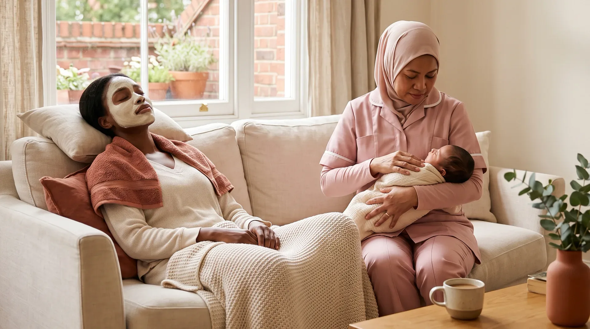
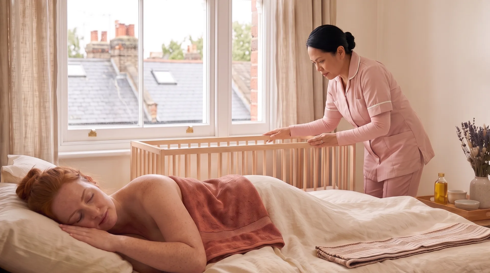
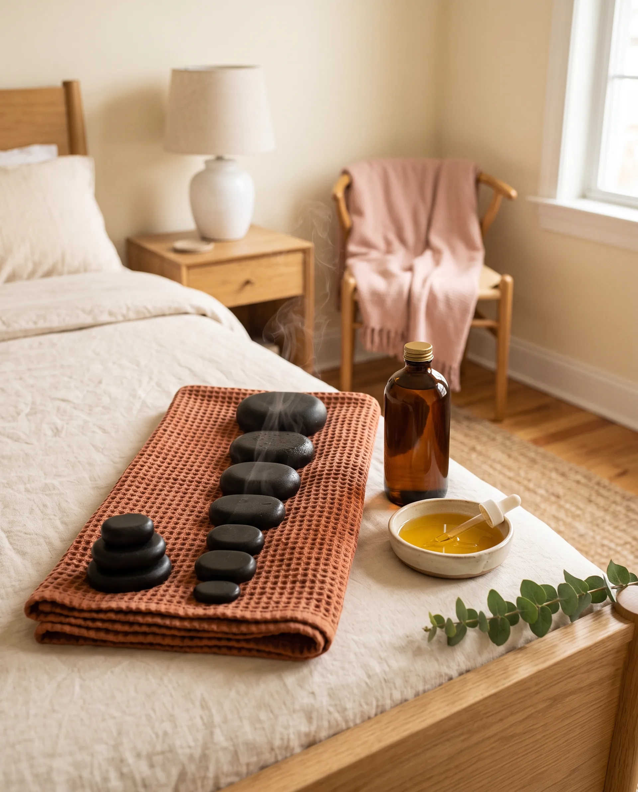
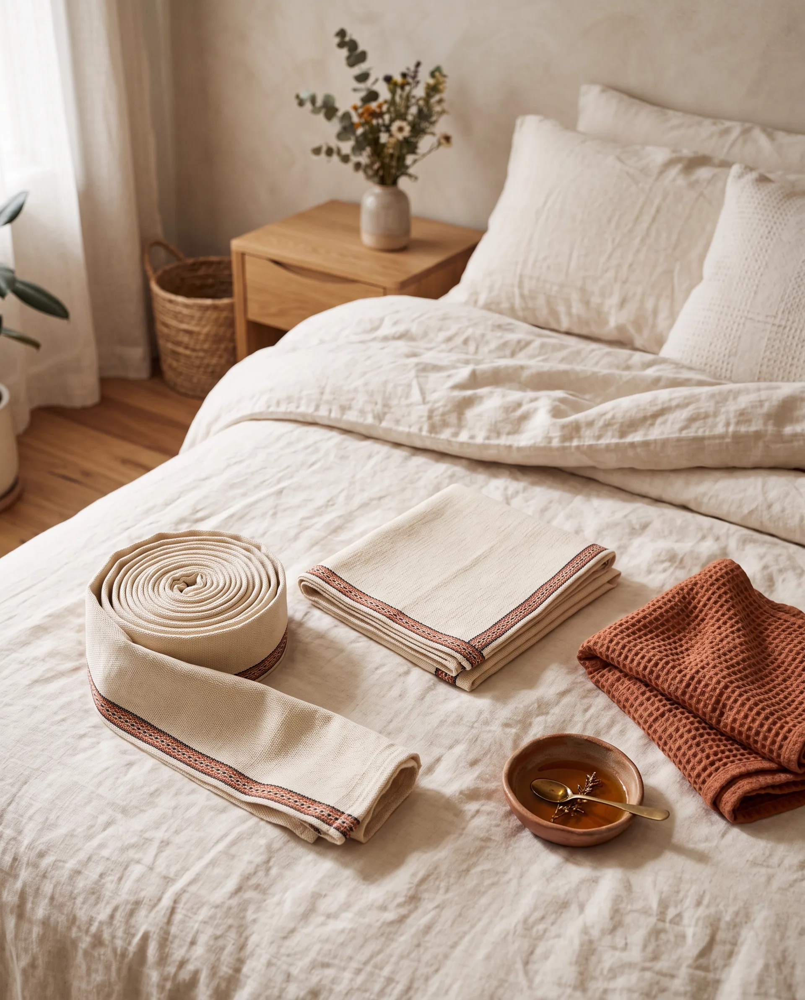
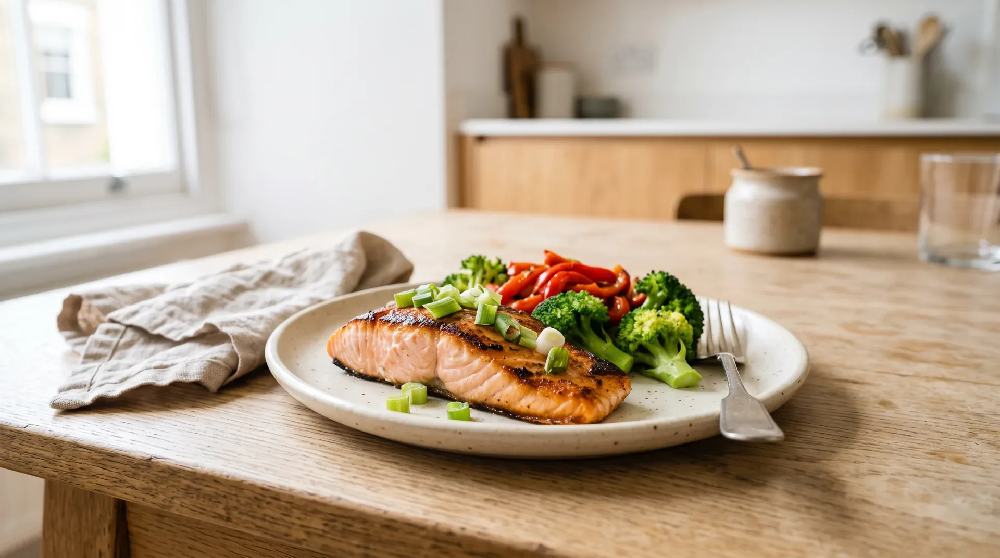
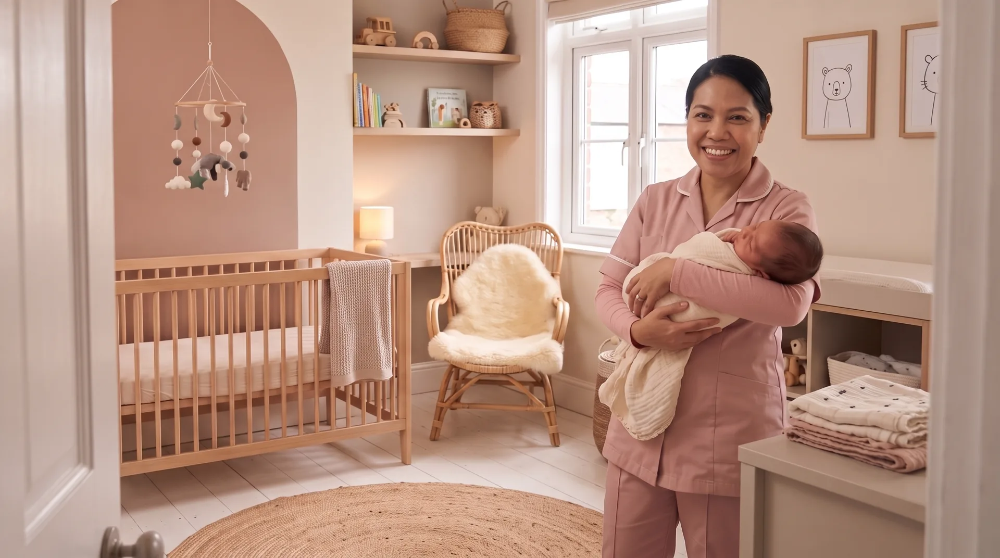
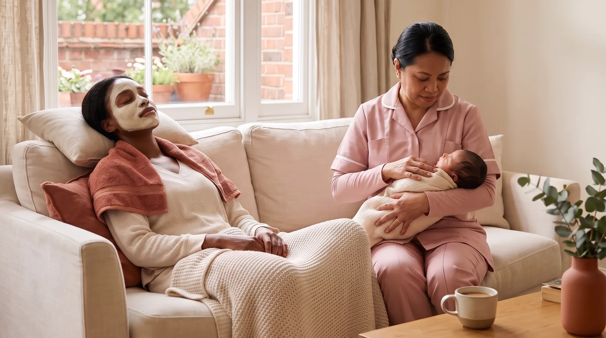
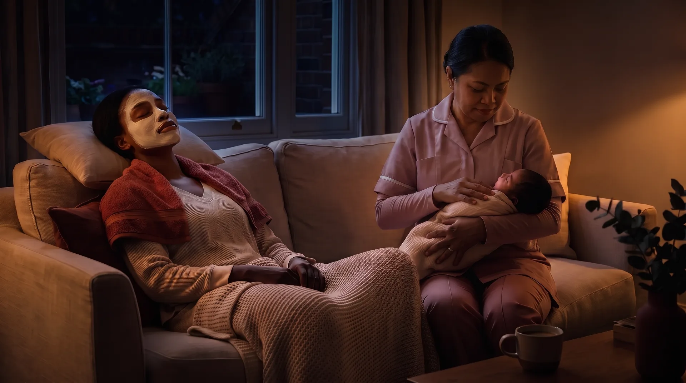

Mother and baby

Your baby cared for while you rest. Someone with you on the first walk outside.


Because mum needs looking after too.
Live-in postpartum care, for you and your baby. A trained specialist stays with you, from five days to thirty.
Book a consultationA herbal bath, drawn warm.
You did not run it. You will not clean it.
You go back to bed. She takes the morning.



Massage with hot stones. Foot reflexology. Herbal baths. Belly binding, daily.
Hands on care that repeats through your stay, not offered once as a treat.
Daily live-in support, seven in the morning until seven at night.

Your baby cared for while you rest. Someone with you on the first walk outside.
Belly binding daily. Herbal baths daily. Thermal blanket treatment through the week.

Three fresh meals a day, cooked in your own kitchen, for you and your family.

Laundry, ironing, light cleaning, the baby wardrobe organised, the groceries collected.
The same four, whichever programme you choose.
What changes is how long they last.


Three in the afternoon.
Seven in the evening.
She has not gone home.
You sleep. Someone else is awake.
And in the morning, she is still here.
Every programme includes the same four areas of care. The longer ones give your recovery more time, and repeat the treatments more often as it progresses.
01 / 06
Warm oil and slow pressure, worked around what is still tender. Four times a week on the longer programmes.
Postpartum massage
The first week home, covered.
A full week, with treatments through it.
Treatments move to a weekly rhythm.
The full confinement period, as it is traditionally kept.
Pricing is shown on the programmes page and talked through on the call. Placeholder in this prototype: see the note in the build report.